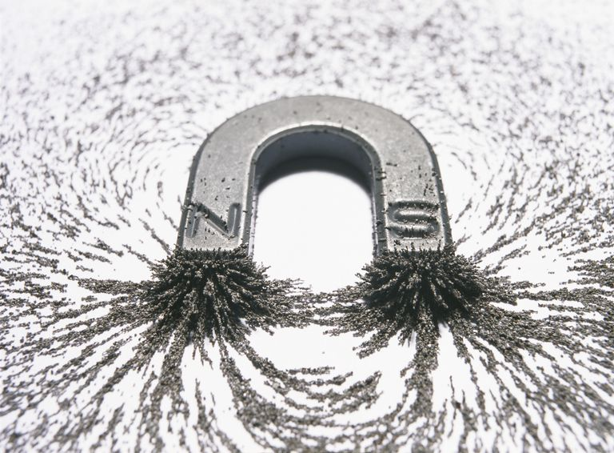

Precision Casting
What is Precision Casting?
Precision casting also called investment casting, is a lost wax casting process widely used for producing ferrous and nonferrous metal parts. Unlike other casting processes, precision casting produces net shape parts with excellent surface finish and dimensional accuracy. This manufacturing process is ideal for applications that have relatively low production quantities (100 to 10,000 pieces) or rapidly changing product designs.

Precision casting also called investment casting, is a lost wax casting process widely used for producing ferrous and nonferrous metal parts. Unlike other casting processes, precision casting produces net shape parts with excellent surface finish and dimensional accuracy. This manufacturing process is ideal for applications that have relatively low production quantities (100 to 10,000 pieces) or rapidly changing product designs.